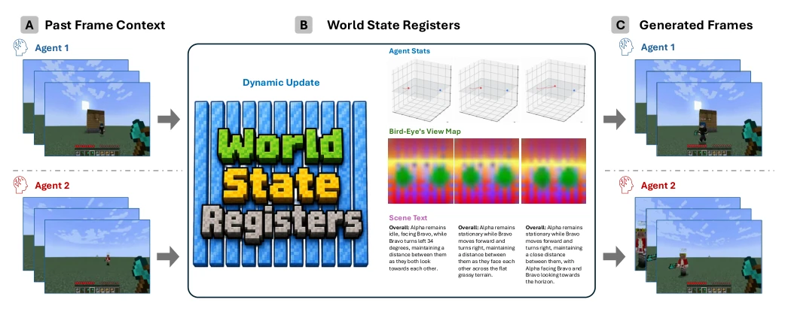

多智能体交互世界模型的核心痛点是“一致性”。现有工作如 Solaris (Savva et al., 2026) 或 Diffusion Forcing (Chen et al., 2024) 主要依赖帧历史作为条件，导致共享状态难以跨视角维持。每个代理只看到 2D 投影，但世界状态是 3D 且持续的。如果只靠像素历史，模型容易在长序列生成中产生逻辑漂移，比如 Alpha 和 Bravo 的位置关系对不上。作者认为应该直接建模底层世界状态，而不是让一致性成为视频生成的副产品。这种隐式记忆机制在处理长程依赖时尤为脆弱，导致跨代理交互时出现几何或语义冲突。
—

Figure 1: Our model enables interactive agents acting in a shared world. During rollout, a set of register tokens represents the evolving world state shared across agents. This state captures agent status, bird’s-eye views, and scene text, and is being dynamically updated at each rollout step while new frames are generated.
Figure 2: Pipeline overview. (A) A standard streaming autoregressive diffusion model denoises each new frame from a local KV cache window. (B) Our model streams with world state registers, which carry global state information and individual agent status. (C) Causal attention mask during Stage-2 training. Frame tokens attend to the local window and the latest register. (D) Auxiliary decoders ground the registers with agent status, bird’s-eye-view maps, and scene text, encouraging the world state registers to encode global scene information.
Figure 3: Qualitative visualization. We show generated multi-agent rollouts with grounded world states: agent coordinates, bird’s-eye-view maps, and scene text. These signals make the persistent world state inspectable and help verify cross-player consistency over time. Please refer to the project page for more detailed video demo.